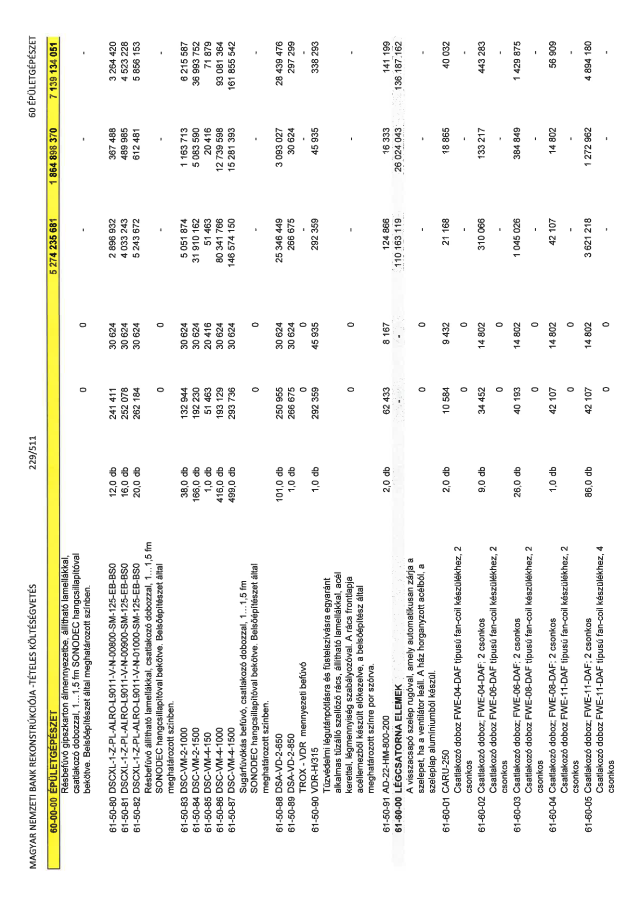

| Tétel | Menny. | Egys. | Anyag e.ár (net HUF) | Díj e.ár (net HUF) | Anyag összesen (net HUF) | Díj összesen (net HUF) | Anyag+Díj összesen (net HUF) |
|---|---|---|---|---|---|---|---|
| Résbefúvó gipszkarton álmennyezetbe, állítható lamellákkal, csatlakozó dobozzal, 1...1,5 fm SONODEC hangcsillapítóval bekötve. Belsőépítészet által meghatározott színben. | 0 | 0 | 0 | 0 | 0 | 0 | 0 |
| 61-50-80 DSCXL-1-Z-PL-ALRO-L9011-V-N-00800-SM-125-EB-BS0 | 12,0 | db | 241 411 | 30 624 | 2 896 932 | 367 488 | 3 264 420 |
| 61-50-81 DSCXL-1-Z-PL-ALRO-L9011-V-N-00900-SM-125-EB-BS0 | 16,0 | db | 252 078 | 30 624 | 4 033 243 | 489 985 | 4 523 228 |
| 61-50-82 DSCXL-1-Z-PL-ALRO-L9011-V-N-01000-SM-125-EB-BS0 | 20,0 | db | 262 184 | 30 624 | 5 243 672 | 612 481 | 5 856 153 |
| Résbefúvó állítható lamellákkal, csatlakozó dobozzal, 1...1,5 fm SONODEC hangcsillapítóval bekötve. Belsőépítészet által meghatározott színben. | 0 | 0 | 0 | 0 | 0 | 0 | 0 |
| 61-50-83 DSC-VM-2-1000 | 38,0 | db | 132 944 | 30 624 | 5 051 874 | 1 163 713 | 6 215 587 |
| 61-50-84 DSC-VM-2-1500 | 166,0 | db | 192 230 | 30 624 | 31 910 162 | 5 083 590 | 36 993 752 |
| 61-50-85 DSC-VM-4-150 | 1,0 | db | 51 463 | 20 416 | 51 463 | 20 416 | 71 879 |
| 61-50-86 DSC-VM-4-1000 | 416,0 | db | 193 129 | 30 624 | 80 341 766 | 12 739 598 | 93 081 364 |
| 61-50-87 DSC-VM-4-1500 | 499,0 | db | 293 736 | 30 624 | 146 574 150 | 15 281 393 | 161 855 542 |
| Sugárfúvókás befúvó, csatlakozó dobozzal, 1...1,5 fm SONODEC hangcsillapítóval bekötve. Belsőépítészet által meghatározott színben. | 0 | 0 | 0 | 0 | 0 | 0 | 0 |
| 61-50-88 DSA-VD-2-650 | 101,0 | db | 250 955 | 30 624 | 25 346 449 | 3 093 027 | 28 439 476 |
| 61-50-89 DSA-VD-2-850 | 1,0 | db | 266 675 | 30 624 | 266 675 | 30 624 | 297 299 |
| TROX - VDR mennyezeti befúvó | 0 | 0 | 0 | 0 | 0 | 0 | 0 |
| 61-50-90 VDR-H/315 | 1,0 | db | 292 359 | 45 935 | 292 359 | 45 935 | 338 293 |
| Tűzvédelmi légutánpótlásra és füstelszívásra egyaránt alkalmas tűzálló szellőző rács, állítható lamellákkal, acél kerettel, légmennyiség szabályozóval. A rács frontlapja acéllemezből készült előkezelve, a belsőépítész által meghatározott színre por szórva. | 0 | 0 | 0 | 0 | 0 | 0 | 0 |
| 61-50-91 AD-22-HM-800-200 | 2,0 | db | 62 433 | 8 167 | 124 866 | 16 333 | 141 199 |
| 61-60-00 LÉGCSATORNA ELEMEK | 0 | 0 | 0 | 0 | 110 163 119 | 26 024 043 | 136 187 162 |
| A visszacsapó szelep rugóval, amely automatikusan zárja a szelepet, ha a ventilátor leáll. A ház horganyzott acélból, a szeleplap alumíniumból készül. | 0 | 0 | 0 | 0 | 0 | 0 | 0 |
| 61-60-01 CARU-250 | 2,0 | db | 10 584 | 9 432 | 21 168 | 18 865 | 40 032 |
| Csatlakozó doboz FWE-04-DAF típusú fan-coil készülékhez, 2 csonkos | 0 | 0 | 0 | 0 | 0 | 0 | 0 |
| 61-60-02 Csatlakozó doboz; FWE-04-DAF; 2 csonkos | 9,0 | db | 34 452 | 14 802 | 310 066 | 133 217 | 443 283 |
| Csatlakozó doboz FWE-06-DAF típusú fan-coil készülékhez, 2 csonkos | 0 | 0 | 0 | 0 | 0 | 0 | 0 |
| 61-60-03 Csatlakozó doboz; FWE-06-DAF; 2 csonkos | 26,0 | db | 40 193 | 14 802 | 1 045 026 | 384 849 | 1 429 875 |
| Csatlakozó doboz FWE-08-DAF típusú fan-coil készülékhez, 2 csonkos | 0 | 0 | 0 | 0 | 0 | 0 | 0 |
| 61-60-04 Csatlakozó doboz; FWE-08-DAF; 2 csonkos | 1,0 | db | 42 107 | 14 802 | 42 107 | 14 802 | 56 909 |
| Csatlakozó doboz FWE-11-DAF típusú fan-coil készülékhez, 2 csonkos | 0 | 0 | 0 | 0 | 0 | 0 | 0 |
| 61-60-05 Csatlakozó doboz; FWE-11-DAF; 2 csonkos | 86,0 | db | 42 107 | 14 802 | 3 621 218 | 1 272 962 | 4 894 180 |
| Csatlakozó doboz FWE-11-DAF típusú fan-coil készülékhez, 4 csonkos | 0 | 0 | 0 | 0 | 0 | 0 | 0 |
